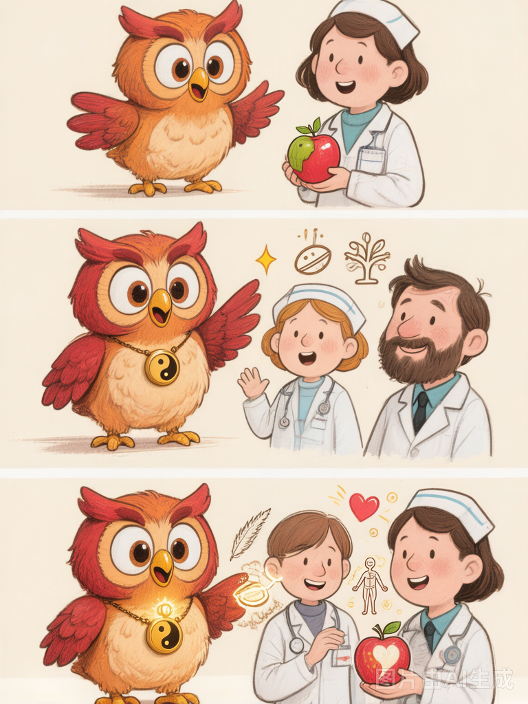

What a 1,800-Year-Old Book Taught Me About Anxiety — And Why the West Deserves to Hear It
120| 121| 122|Let me start with a confession: I never planned to do this.
123| 124|For years, I kept my two lives separate. By day, I work in international trade — negotiating deals, managing exports, navigating the practical realities of global commerce. By night and on weekends, I studied classical Chinese medicine. Not the simplified version you find in wellness magazines. The real thing: the Shanghan Lun, Zhang Zhongjing's 1,800-year-old treatise on the patterns of illness and health. Six-channel differentiation. Formula-pattern correspondence. The texts that generations of Chinese physicians have treated as the foundation of their craft.
125| 126|These were private pursuits. A hobby, I told myself. Not something to share.
127| 128|But something shifted recently, and I want to be honest about what it was.
129| 130|The Anxiety We All Feel
131| 132|It started with AI. Not a fear of AI — I use AI tools daily in my work, and I am genuinely amazed by what they can do. But watching technology accelerate at this pace has made me notice something in myself and in the people around me: a quiet, pervasive anxiety. A sense that the world is speeding up beyond our capacity to process it. That the rhythms that governed human life for thousands of years — seasons, meals, sleep, community — are being replaced by something we cannot quite name but can certainly feel.
133| 134|We are more connected than ever and more isolated. More productive and more exhausted. More informed and less certain.
135| 136|And here is the thing I keep coming back to: the ancient Chinese physicians already had a name for this. They did not call it "anxiety" in the modern clinical sense. But the fundamental understanding — that health depends on harmony between a person and their environment, on rhythms and patterns, on the relationship between inner experience and outer world — runs through every page of the Shanghan Lun.
137| 138|They understood that when a person is out of sync with their world, the body speaks. First in whispers. Then in shouts.
139| 140|Why the West Needs This Now
141| 142|I am not romanticizing ancient China. The Shanghan Lun is not a book of mystical secrets. It is a practical, systematic, carefully observed framework for understanding the human body in relation to the natural world. Zhang Zhongjing was, in his own way, a scientist — observing patterns, testing interventions, documenting results with a rigor that was remarkable for the second century.
143| 144|What makes this tradition valuable now is precisely what makes it different from modern Western medicine. Modern medicine excels at acute intervention — identifying a pathogen, targeting a mechanism, solving a specific problem. It is extraordinary at what it does. But it is less interested in the space between problems: the terrain of daily life, the subtle patterns of imbalance that precede illness, the relationship between emotional states and physical health.
145| 146|Classical Chinese medicine lives in that space. It has a vocabulary for it. A framework for it. And increasingly, I believe the English-speaking world is hungry for it — not as a replacement for modern medicine, but as a complement that addresses a dimension modern medicine systematically overlooks.
147| 148|
150|Ollie discovers the Shanghan Lun — and decides it's time to share with the West.
151|What This Blog Is (and Is Not)
154| 155|This blog is a quiet experiment. I will write about the philosophical foundations of classical Chinese medicine — the worldview, not the prescriptions. I will explore what the Shanghan Lun teaches us about balance, about paying attention to the body's signals, about living in relationship with nature rather than in opposition to it. I will try to explain concepts like Qi, Yin-Yang, and the six channels in plain English — not as mystical abstractions, but as practical frameworks for thinking about health.
156| 157|This is not a medical advice blog. I will never recommend specific herbs, treatments, or interventions. If you are sick, see a doctor. What I offer is something different: an introduction to a way of seeing that has endured for two millennia and that, I believe, speaks directly to the discontents of modern life.
158| 159|A Word on Language
160| 161|Translating classical Chinese medicine into English is humbling. Concepts that are precise and layered in Chinese often flatten into something misleading in English. Qi is not "energy." The six channels are not literal physical pathways. Even the word "medicine" itself carries assumptions that do not entirely apply.
162| 163|I will do my best to be clear, honest, and precise. When a concept resists translation, I will say so rather than force it into a misleading equivalent. And I welcome correction from readers who know more than I do — because in this tradition, learning never ends.
164| 165|Why Now
166| 167|The honest answer: because AI has made it possible.
168| 169|A few years ago, the idea of one person — with a full-time job, no publishing background, and no team — creating an English-language blog about Shanghan Lun philosophy would have been absurd. The research alone would have been overwhelming. The translation, the editing, the distribution — these were tasks for publishing houses and academic institutions.
170| 171|Now, AI tools help me research faster, draft more fluently, and polish more efficiently. I still write every word myself. I still make every judgment about what to say and how to say it. But the burden of production has dropped dramatically. What was once impossible for a single person is now merely ambitious.
172| 173|I think this is the right use of AI: not to replace human creativity, but to amplify it. Not to generate content at scale, but to enable one person to share what they genuinely know and care about with people who might genuinely benefit from it.
174| 175|An Invitation
176| 177|If you have read this far, thank you. This project is small. It may stay small. I am not chasing virality or metrics or growth curves. What I want is simpler: to put something genuine into the world, in a corner of the internet that moves slowly and respects depth.
178| 179|If you are curious about classical Chinese medicine — not as a consumer of wellness trends, but as a fellow traveler interested in ancient ideas about health, nature, and what it means to live well — I invite you to follow along.
180| 181|There is no newsletter yet. No course to sell. Just letters from Ollie, one at a time, written carefully and published when they're ready.
182| 183|In a world obsessed with speed, I think there is value in something slow.
184| 185|Sources & Further Reading
187|-
188|
- 189| Zhang Zhongjing (张仲景). Shanghan Lun (《伤寒论》, Treatise on Cold Damage Disorders), circa 200–210 CE. The foundational clinical text of classical Chinese medicine, containing the six-conformation differentiation system and the original formula-pattern correspondence methodology. 190| 191|
- 192| Huangdi Neijing (《黄帝内经》, The Yellow Emperor's Inner Classic), compiled circa 200 BCE. The philosophical and theoretical root of Chinese medicine, covering Yin-Yang, Five Phases, organ networks, meridian theory, and the relationship between human health and the natural world. 193| 194|
- 195| Unschuld, Paul U. Huang Di Nei Jing Su Wen: Nature, Knowledge, Imagery in an Ancient Chinese Medical Text. University of California Press, 2003. The most rigorous English-language scholarly translation and analysis of the Neijing, recommended for readers who want academic depth. 196| 197|